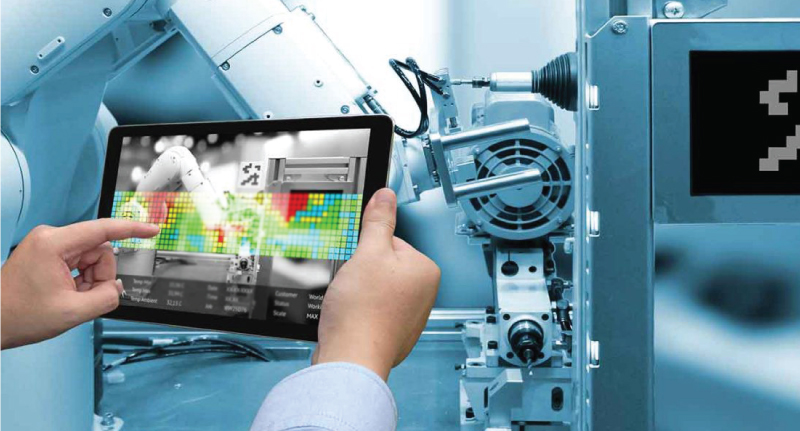
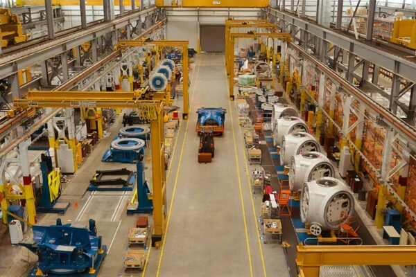
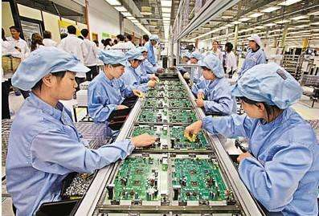

Introduction
IoT enabled devices can provide better healthcare and safety for patient care. ...
IoT also has devices collecting data on patient's blood pressure variation, exercise check, diabetes, calorie count and so on. Its transformation is visible in healthcare applications, hospital management, and even insurance companies.
Industry 4.0 is the term for the Fourth Industrial Revolution. It is the automation of the manufacturing industry with the help of IoT for easy, efficient and cost-effective production methods. The machine-to-machine communications are integrated through IoT, reducing human intervention for lesser errors and labour cost. Another impressive aspect of IoT in industry 4.0 is ‘Predictive Maintenance’. Machines are enabled to predict and perform cost-effect updates and maintenance before the system fails or damages.
Smart cities are not mere talks, not possible ventures with the help of IoT. Connected cities can change the life of its citizens, by providing better traffic management, connected cars for an easy commute, smart garbage for waste management, and even to improve air quality. The New York City management is increasingly becoming smarter with congestion management, easy charging portals, super-fats free wireless connectivity, and so on. Amsterdam is another city developing quickly with robots, power generation through shared data, and none is possible without the internet of things.
The IoT is a considerable advantage for modern society. But there are security and safety issues as well. IoT for smart cities, home appliances, smart cars require shared data. Hackers can easily decipher personal details through smartphone applications. Such a lack of proper security needs clearing.


BENEFITS OF IOT IN MAnufacturing
By connecting products, processes, infrastructure and people, the IoT is building a new era of smart and informed manufacturing. All components of the manufacturing value chain can significantly benefit from the penetration of digital sensors that allow high visibility and better control of production processes while also enabling the automation of tasks.
1) Quality Control
In a standard reactive quality control process, manufacturers produce an item, their quality control unit tests it, and they hope to catch and rectify the flaws before the product reaches the market.
IoT makes this process proactive with thermal and video sensors collecting complete product data through different stages of a product cycle. The products can also be tested at each manufacturing step to check if their attributes are within specifications. In addition, instrumentation and monitoring of manufacturing equipment help quality control personnel to check if and where equipment calibration diverges from standard settings – such inaccuracies must be thwarted in time to avoid misalignment of products.
IoT’s support in monitoring both equipment settings and the outcomes of each production step gives manufacturers a stronger assurance of detecting quality problems at the source. Measures for improvement can, therefore, be taken in time.
RJ Corp, the largest bottler of Pepsi in India², uses IoT sensors to capture different data parameters required to gauge quality on a real-time basis. As the material gets prepared, deviations indicate at a quality concern, and the machine can be stopped for immediate corrective action.

2) Improved Energy Efficiency
Energy is one of the significant expenses in manufacturing companies. The problem with the current industrial energy infrastructure is that it can only track the high level of energy consumption.
The utility bills you get include the records of energy consumption by the entire factory. There’s no way to break down the energy consumption to device levels and find out the parts with low performance. There are some energy consumption monitoring tools out there, but they have limited data points, and you can’t precisely pinpoint the problem with partial data.
IoT can close this gap by providing energy data on the device level. If there’s an underperforming device in the network, the sensors will detect it and alert you so you can take necessary actions. The technology can give you insights and recommendations on improving energy waste and other opportunities for every saving.

3. Enhanced Product Quality
Manufacturing a high-quality product at the lowest cost possible is the dream of every manufacturer out there. A slight change in quality can have a far-reaching impact on the manufacturing business.
A high-quality product can improve customer satisfaction, reduce waste, improve sales, and profit. But, producing excellent quality products is not that easy.
IoT can help you with this. You see, one of the main reasons behind low-quality products is the faulty machines that aren’t set or calibrated or maintained correctly. The worst part is that a lot of tiny details often go unnoticed as the end product would look just perfect. The product passes through quality tests, and it’s not until a few months when your customers start experiencing the issue.
Imagine the amount of resources it would take to spot and correct the issue. In an IoT-enabled network, sensors detect the slightest change in the configuration and send alerts to the operators. The staff can temporarily stop production and fix the problem before it’s too late.
DISAVDVANTAGES
1. Security and privacy
Keeping the data gathered and transmitted by IoT devices safe is challenging, as they evolve and expand in use. Although cybersecurity is a high priority, IoT devices aren't always included in the strategy. Devices must be protected from physical tampering, internet-based software attacks, network-based attacks and hardware-based attacks.
Data privacy is another concern, especially because IoT devices are being used in more sensitive industries such as healthcare and finance. Information privacy laws are coming into effect globally, too, meaning that not only does it make good business sense to protect data, but businesses are legally required to do so.
Data privacy is another concern, especially because IoT devices are being used in more sensitive industries such as healthcare and finance. Information privacy laws are coming into effect globally, too, meaning that not only does it make good business sense to protect data, but businesses are legally required to do so.
Integrating encryption and security protocols with IoT devices can be difficult with a large fleet of devices. The cost in time, effort and money to do it on all devices might be prohibitive, so some businesses might use inadequate platforms because they're cheap or forego it altogether. All it takes is one breach for a business to learn a tough lesson.

2. Technical complexity
Though it might seem like IoT devices are performing simple tasks such as counting entry swipes at a secure door, there's a lot of complex technology involved in creating them. Plus, if they're providing essential data to another workflow or system, they could negatively affect everything connected to it. Miscounting the number of swipes at the door isn't a big deal, but if another device confuses temperature data with entry swipe data, it can be catastrophic. And the error isn't always easy to fix.
There can be a big learning curve in deploying IoT devices. It makes sense to develop a strategy on how and why to deploy them before purchasing them. That way, you can be assured they're working as intended and you can support them.